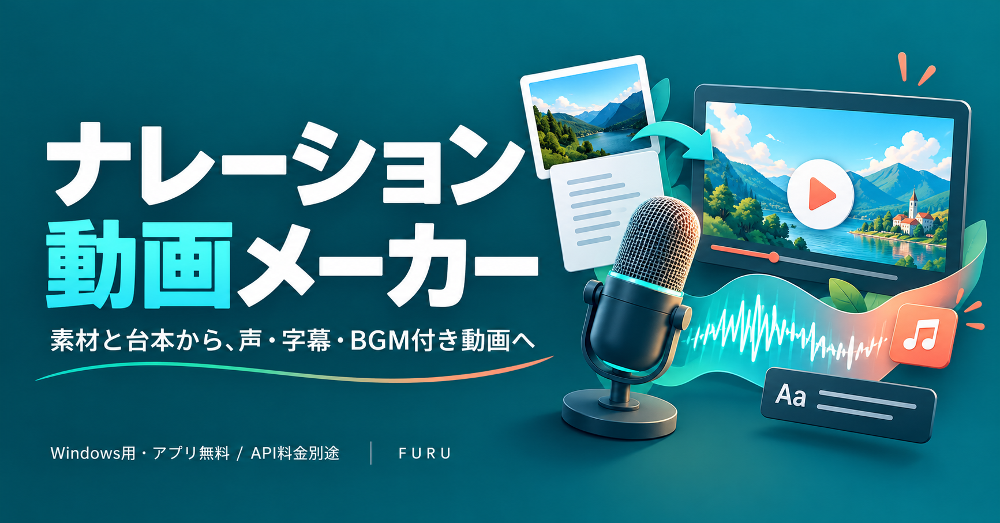
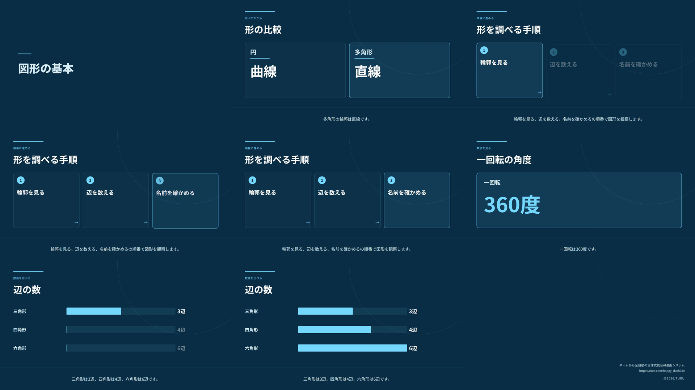
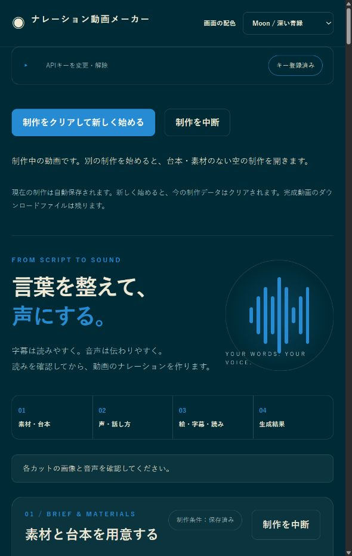
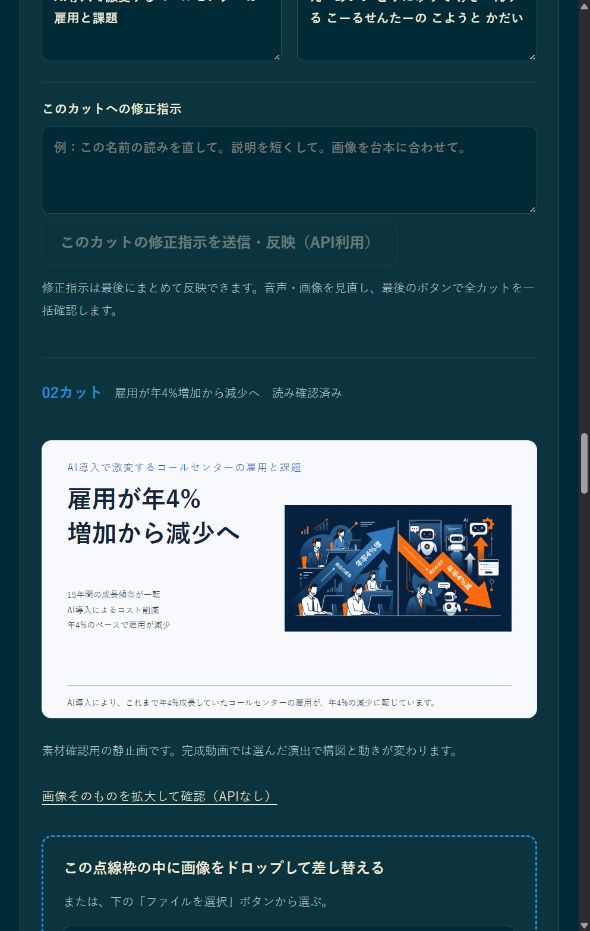

FURU / Windows用ローカルアプリ / v{{VERSION}}
ナレーション動画メーカー
素材と台本から、声・字幕・BGM付きの16:9動画を作成します。アプリ無料・ソースコード公開。生成APIの利用料は別途必要です。

動画制作には、Windows上で付属バッチを起動してください。公開ページだけでは動画を生成できません。Gitをインストールする必要はありません。
声と図解で、説明を分かりやすく
写真や参考文章から、商品紹介・活動報告・学習用の16:9動画を作れます。資料からAIで台本を作る際、内容に合う図解を選びます。
- 比較：二つの特徴を並べて見せます。
- 手順：説明の順番に合わせて項目を表示します。
- 数字強調：大切な数値を大きく見せます。
- 棒グラフ：同じ単位の数値を長さで比較します。

新しく作るときは「内容に合わせた図解を使う（おすすめ）」がONです。カットごとのプレビューで図解・字幕・読みを確認してください。図解だけなら画像は任意です。OFFへの切り替えだけでは生成APIを呼びません。文字や数値は字幕と照合しますが、資料の事実確認は利用者が行います。表示タイミングは推定です。
ダウンロードから起動まで
- 上のダウンロードを開き、Assets欄のSource code (zip)を保存します。
- ダウンロードしたZIPを右クリックしてすべて展開します。ZIP内のまま実行しないでください。
- 展開フォルダーの中で、
package.jsonと同じ場所にあるstart_narration_studio.batをダブルクリックします。 - 黒いウィンドウで不足するNode.js、動画処理ライブラリ、描画ブラウザーの準備が終わるまで待ちます。
- アプリがブラウザーに開きます。開かない場合は、READY表示後に
http://127.0.0.1:6181/を開きます。
Windows 10/11のx64版が対象です。初回準備には通信と空き容量が必要です。書き込み可能な場所へ展開し、利用中は黒いウィンドウを開いたままにしてください。終了は処理完了後にCtrl+Cです。
APIを準備する
Google AI Studioでご自身のGemini APIキーを用意し、アプリ上部のAPI欄へ登録します。キーは起動中のローカルサーバーのメモリだけで保持します。終了・再起動後には再入力してください。詳しくはGoogle公式のキー案内をご覧ください。
動画を作る流れ
- 画像や参考本文、公開URLなどを入れて台本を用意します。
- 台本を確認して読み込み、声のサンプルを選びます。
- 各カットの絵・字幕・読みを確認し、全文の読みを確定します。
- 動画を作成で、必要な音声とBGMを自動で準備して動画を作ります。
- 完成動画を再生して確認します。MP4とM4AはWindowsのダウンロードへ保存されます。


映像演出は静止画と文字を動かす方式です。人物の新しい演技を生成する機能ではありません。掲載台本は操作例です。
現在の制作を再開するには
通常のバッチ起動は、新しい制作を開始して前の作業データをクリアします。途中から再開したい場合は、展開フォルダーでコマンドプロンプトを開き、start_narration_studio.bat --resumeを実行します。書き出した動画・音声はダウンロードに残ります。
料金と利用条件
アプリの通常利用と、完成作品の公開・販売・納品は無料です。AI台本、画像、ナレーション、BGMの生成ではAPI料金がかかる場合があります。素材や第三者ソフトウェアの条件も確認してください。
アプリ自体の有料配布や第三者向け有料サービスへの組み込みには事前許可が必要です。独自の利用条件によるソースコード公開です。FURUアプリ利用条件の全文、第三者の表記をご確認ください。
動画描画のRemotion 4.0.534には独立した条件があります。個人、従業員3人以下の営利組織、非営利組織などが無料対象で、それ以外はCompany Licenseが必要です。対象バージョンの条件を導入前に確認してください。
ナレーション動画メーカー v{{VERSION}} / FURU